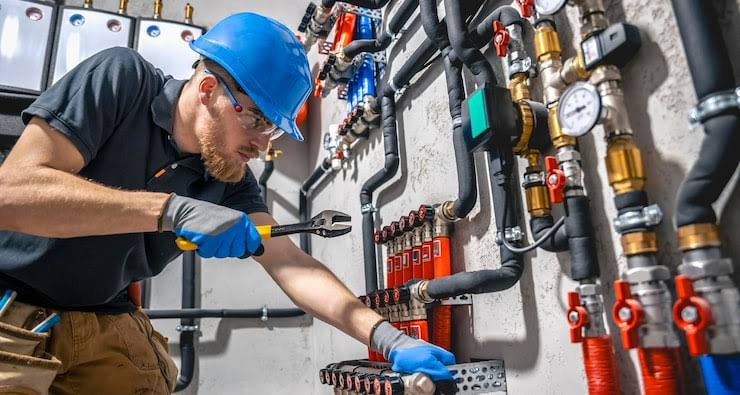
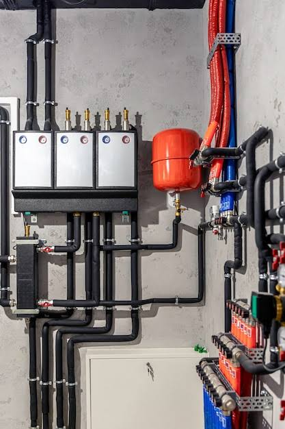
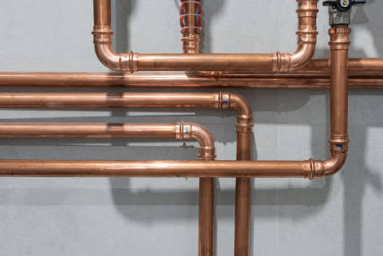
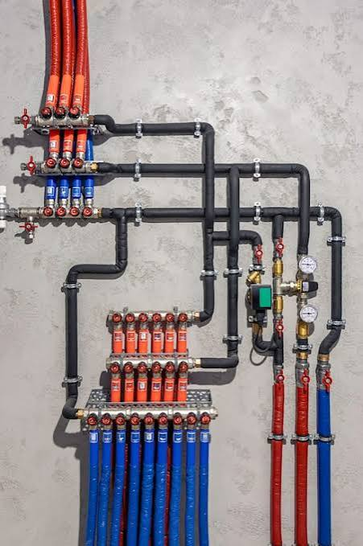

Su Kaçağı Tespiti ve Onarımı
Duvar veya zemin kırmadan, cihazla yerinde kaçak tespiti. Onarımı aynı ziyarette tamamlarız.
Adem Usta ve ekibi, Kocasinan Merkez'den Bahçelievler'in tamamına 7/24 gelir; sorunu yerinde tespit eder, net fiyatı söyler, işi özenle teslim eder.
Küçük bir damlamadan tesisatın tamamen yenilenmesine kadar, evinizin su hattıyla ilgili her işi tek ustadan alırsınız.
Duvar veya zemin kırmadan, cihazla yerinde kaçak tespiti. Onarımı aynı ziyarette tamamlarız.
Lavabo, gider ve kanalizasyon tıkanıklarını basınçlı su ve kamera kontrolüyle açarız.
Kombi bakımı, arıza onarımı, petek ve vana değişimi; kışa girmeden kontrol randevusu alabilirsiniz.
Doğalgaz iç tesisatı, boru hattı ve cihaz bağlantısı; kurallara uygun, sızdırmazlık kontrolü yapılarak tamamlanır.
Batarya, rezervuar, sifon ve gider montajı; yenileme ve tadilat projelerinde baştan tesisat kurulumu.
Depo ve hidrofor kurulumu, bakımı, basınç ve otomasyon ayarı; düşük basınç şikayetlerine kalıcı çözüm.
Patlak boru, taşkın veya su basması gibi acil durumlarda 7/24 en kısa sürede adresinize geliriz.
Kocasinan Merkez'de olarak Bahçelievler'in tamamında 7/24 randevu veriyoruz. Listede göremediğiniz bir mahalle için de arayın — çoğu zaman yine de geliriz.
Telefon veya WhatsApp'tan durumu kısaca anlatın, aciliyetini belirtin.
Size uygun bir saat aralığı veririz; usta o aralıkta adresinizde olur.
Sorunu yerinde inceleriz, fiyatı onayınıza sunarız — onaysız işe başlamayız.
Tamamlanan her işlem, süresi belirtilen yazılı işçilik garantisiyle teslim edilir.




Aşağıdaki yorumlar Google İşletme Profilimizden alınmıştır.
Su kaçağı tespiti için Adem Usta'ya ulaştık; kaçağı noktasal olarak bulup tamiratını yaptılar, sonrasında tekrar test ettiler. Teşekkür ederiz.
Gömme klozetim arızalanmıştı, başka firmalar çözemedi. Adem Usta'yı internetten bulduk; adrese gelip 10 dakikada sorunu giderdiler, şiddetle tavsiye ederim.
Daha önce oturduğum evde su kaçağını bulmuşlardı, taşındığım yeni evde yine onları çağırdım. İşlerinde çok iyiler ve güler yüzlüler, çok memnunum.
Google'daki 139 değerlendirmenin ortalaması 5,0 — yeni müşterilerimiz de aynı özeni bekleyebilir.
Keşif ve fiyat şartları adrese ve işin türüne göre değişebilir; en net bilgiyi telefonda durumu anlattığınızda alırsınız.
7/24 hizmet veriyoruz. Uygun gün ve saati telefonda birlikte netleştiririz.
Usta adresinize gelip sorunu yerinde incelemeden kesin fiyat vermez. Fiyat, işe başlamadan önce onayınıza sunulur.
Ödeme yöntemleri için telefonda bilgi alabilirsiniz; iş bitiminde fatura/fiş verilir.
Yapılan işin garanti kapsamı ve süresi, işin türüne göre telefonda veya yerinde netleştirilir.
Kocasinan Merkez'de olarak Bahçelievler'in tamamına gidiyoruz. Mahallenizi yukarıdaki listede göremiyorsanız yine de arayın, çoğu zaman ulaşabiliyoruz.
Formu doldurun ya da doğrudan arayın / WhatsApp'tan yazın — hangisi size kolay geliyorsa.